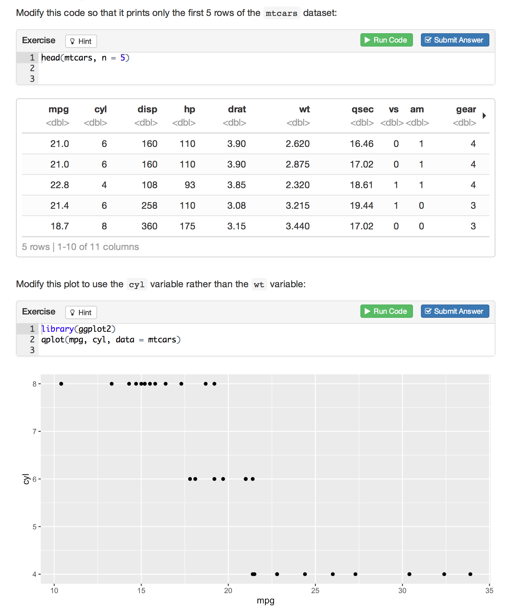

tutor: Interactive tutorials for R
Overview
The tutor package makes it easy to turn any R Markdown document into an interactive tutorial. Tutorials consist of content along with interactive components for checking and reinforcing understanding. Tutorials can include any or all of the following:
Narrative, figures, illustrations, and equations.
Code exercises (R code chunks that users can edit and execute directly).
Quiz questions.
Videos (supported services include YouTube and Vimeo).
Interactive Shiny applets.
To create a tutorial, just use library(tutor) within your Rmd file to activate tutorial mode, then use the exercise = TRUE attribute to turn code chunks into exercises. Users can edit and execute the R code and see the results right within their browser.
For example, here’s a very simple tutorial:
---
title: "Hello, Tutor!"
output: html_document
runtime: shiny_prerendered
---
```{r setup, include=FALSE}
library(tutor)
```
The following code computes the answer to 1+1. Change it so it computes 2 + 2:
```{r addition, exercise=TRUE}
1 + 1
```This is what the running tutorial document looks like after the user has entered their answer:

Getting Started
Installation
Install the development version of the tutor package from GitHub as follows:
devtools::install_github("rstudio/tutor", auth_token = "33cdbf9d899fe6eff5022e67e21f08964f7c7b19")Install the current RStudio Daily Build (v1.0.114 or higher) as it includes tools for easily running and previewing tutorials.
Creating a Tutorial
A tutorial is just a standard R Markdown document that has three additional attributes:
- Loads the tutor package.
- Includes one or more interactive components (exercises, quiz questions, etc.).
- Uses the
runtime: shiny_prerendereddirective in the YAML header.
There is one other requirement related to R code chunks that contain exercises or quiz questions: they must have a unique chunk label. For example, this chunk is labeled addition:
```{r addition, exercise=TRUE}
1 + 1
```This requirement exists to ensure that a stable identifier is associated with each interactive component. This in turn makes it possible to save and restore user work as well as facilitates aggregation and reporting on responses.
The runtime: shiny_prerendered element included in the YAML hints at the underlying implementation of tutorials: they are simply Shiny applications which use an R Markdown document as their user-interface rather than the traditional ui.R file.
You can copy and paste the simple “Hello, Tutor!” example from above to get started creating your own tutorials.
Running Tutorials
Tutorials are Shiny applications that are run using the rmarkdown::run function rather than the shiny::runApp function. For example:
rmarkdown::run("tutorial.Rmd")If your tutorial is included within an R package you can also run it via the tutor::run_tutorial function. For example, you can run a live version of the “Hello, Tutor” example provided above with:
tutor::run_tutorial("hello", package = "tutor")Exercises
Exercises are interactive R code chunks that allow readers to directly execute R code and see it’s results:

Exercises can include hints or solutions as well as custom checking code to provide feedback on user answers. The Exercises page includes a more in depth discussion of exercies and their various available options and behaviors.
Questions
You can include one or more multiple-choice quiz questions within a tutorial to help verify that readers understand the concepts presented. Questions can either have a single or multiple correct answers.
Include a question by calling the question function within an R code chunk:
```{r letter-a, echo=FALSE}
question("What number is the letter A in the English alphabet?",
answer("8"),
answer("14"),
answer("1", correct = TRUE),
answer("23")
)
```Here’s what the above question would look like within a tutorial:

The Questions page includes additional information on using questions within tutorials.
Including Videos
You can include videos published on either YouTube or Vimeo within a tutorial using the standard markdown image syntax. For example:

Note that any valid YouTube or Vimeo URL will work, so the following is equivalent to the example above:

Video Size
Videos are responsively displayed at 100% of their container’s width (with height automatically determined based on a 16x9 aspect ratio). You can change this behavior by adding attributes to the markdown where you reference the video.
To use 90% width rather than 100% width:
{width="90%"}To use a fixed width and height:
{width="560" height="315"}Shiny Applets
The tutor package uses runtime: shiny_prerendered to turn regular R Markdown documents into live tutorials. Since tutorials are Shiny applications at their core, it’s also possible to add other forms of interactivity using Shiny (e.g. for teaching a statistical concept interactively).
The basic technique is to add a context="server" attribute to code chunks that are part of the Shiny server as opposed to UI definition. For example:
```{r, echo=FALSE}
sliderInput("bins", "Number of bins:", min = 1, max = 50, value = 30)
plotOutput("distPlot")
```
```{r, context="server"}
output$distPlot <- renderPlot({
x <- faithful[, 2] # Old Faithful Geyser data
bins <- seq(min(x), max(x), length.out = input$bins + 1)
hist(x, breaks = bins, col = 'darkgray', border = 'white')
})
```You can learn more by reading the Prerendered Shiny Documents article on the R Markdown website.
External Resources
You may wish to include external resources (images, videos, CSS, etc.) within your tutorial documents. Since the tutorial will be deployed as a Shiny applications, you need to ensure that these resources are placed within one of several directories which are reachable by the Shiny web server:
| Directory | Description |
|---|---|
images/
|
Image files (e.g. PNG, JPEG, etc.) |
css/
|
CSS stylesheets |
js/
|
JavaScript scripts |
www/
|
Any other files (e.g. downloadable datasets) |
The reason that all files within the directory of the main Rmd can’t be referenced from within the web document is that you may not want all files within your tutorial’s directory to be downloadable by end users. By restricting the files which can be referenced to the above directories you can control which files are downloadable and which are not.
Tutorial Formats
You aren’t limited to the default html_document format when creating tutorials. Here’s an example of embedding a tutorial within a slidy_presentation:

You can run a live version of this example with:
tutor::run_tutorial("slidy", package = "tutor")You can use the tutor package with any R Markdown format that:
Inherits from the
html_document_baseformat (this includeshtml_document,ioslides_presentation,slidy_presentation, and many others).Is marked as
boostrap_compatible. This is a parameter ofhtml_document_basewhich indicates that it’s safe to inject Booststrap CSS into the document.
Deployment
Tutorials can be deployed all of the same ways that Shiny applications can, including running locally on an end-user’s machine or running on a Shiny Server or hosting service like shinyapps.io. The easist way to deploy a tutorial is to include it within an R package and have users run it directly via the tutor::run_tutorial function.
The Deployment page includes an in-depth discussion of the various deployment options as well as some special considerations resources, concurrent usage, and security which come into play when deploying tutorials on a server.